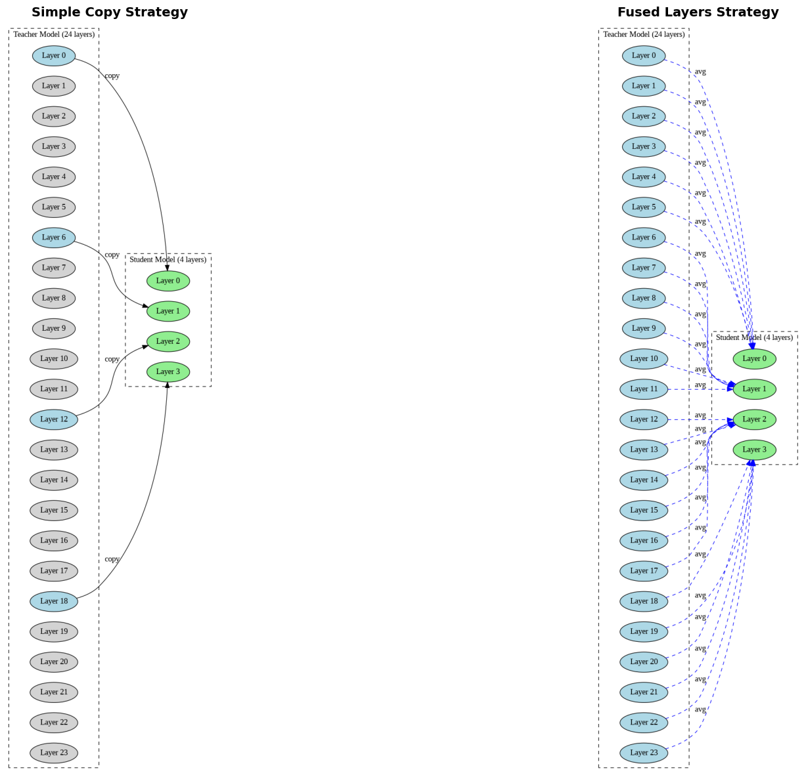
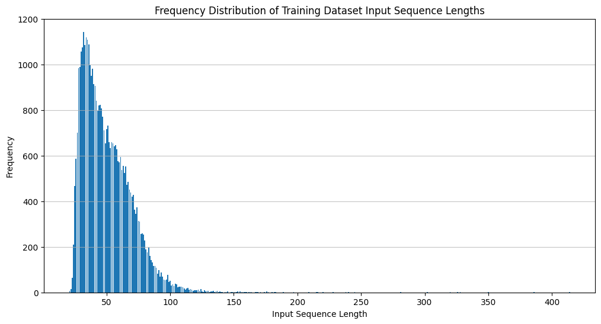

CPU-Friendly Bash Generation: Distilling Qwen2.5-Coder for Local Deployment
date: 2025-11-11
📅 11/11/2025
Aim : Build a small language model that generates bash commands from natural language descriptions, optimized for CPU execution. Rather than training from scratch (which requires extensive data, compute, and time for tokenization, pretraining, etc.), we use knowledge distillation to extract this specialized capability from a larger teacher model. The teacher model is Qwen/Qwen2.5-Coder-0.5B-Instruct, chosen for its instruction-following and coding abilities. For training data, we use the westenfelder/NL2SH-ALFA dataset, containing 40,639 pairs of natural language queries and corresponding bash commands.
Distillation Approach : Think of a Swiss Army knife with multiple tools for different tasks. Our goal is to extract a single, specialized tool from this multi-purpose instrument. The original instruction-tuned model is proficient at many coding tasks, including bash command generation. Through distillation, we create a smaller, focused model that excels specifically at translating natural language to bash commands, while discarding unnecessary capabilities to achieve a compact, efficient design.
Motivation : While users can traditionally consult man pages or online AI platforms like ChatGPT for bash command assistance, several real-world scenarios create barriers to these approaches. Many corporate and enterprise environments block access to external AI platforms due to security policies, leaving developers without intelligent command-line assistance. In air-gapped systems, research facilities, and offline environments, internet connectivity is unavailable, making cloud-based AI tools inaccessible.
Beyond accessibility, privacy concerns are paramount when working with sensitive data or proprietary workflows—sharing command queries with external services risks exposing confidential information about internal systems and processes. Additionally, network latency for API calls can disrupt workflow efficiency, especially when users need quick command suggestions during active development or system administration tasks.
This project addresses these challenges by distilling a specialized, lightweight bash command generation model from a larger instruction-following model (Qwen2.5-Coder-0.5B-Instruct). The resulting model can be deployed locally on minimal CPU resources, providing instant, private, and cost-effective bash command assistance without external dependencies or API fees.
teacher_model.model.embed_tokens.weight in teacher_model.lm_head.weight
True
The teacher model is a decoder only text to text model. It have 24 decoder block stack on top of each other. Each block uses RMS norm. The language model head lm_head which is used for generate logits from the input share the same weight as embed_tokens(weight tying).
Lets talk about how we can shorten the teacher model.
using a smaller tokenizer, which will shorten the vocab size. But this way comes with overhead of retraing the tokenize
major part of the computation is done in the decoder blocks. We can use smaller no of block to achive the task
using samller no of params in the decoder block, here the the depth of the model can help us learning complex representation
For simplicity and symetricity we will go with option 2.
The same vocabulary/tokenizer (151,665 tokens)
The same hidden dimension (896)
The same architecture per layer (attention heads, MLP structure)
The sudent model is a vertical slice of the teacher model, which should make knowledge transfer more straightforward since each layer in the student can potentially learn from its corresponding layer in the teacher.
We will use a DISTIL_FACTOR=6 i.e. only using 4 decoder blocks. We will use AutoConfig attribute of the teacher model to create the new model.
Rather than randomly init weights, there are two initialization strategies that I experimented with:
Simple copy: as the no of decoder layer in the model is trimmed down by the factor of DISTIL_FACTOR, we can just copy the weights from k * DISTIL_FACTOR block. Select every 6th layer from the teacher (layers 0, 6, 12, 18) to initialize your 4 student layers.
Fused layers: we will take the avg of weights from multiple deocder blocks(e.g., average layers 0-5 for student layer 0, layers 6-11 for student layer 1, etc.).
Below digram shows each in details.

def get_layer( i, j):""" Return list state dict values of decoder block """returnlist( teacher_model.model.layers[i * DISTIL_FACTOR + j].state_dict().values())
As the original model is instruct tuned and triained with chat templete. We have to convert the input to the chat template. There are four roles present : system, user, assistant and tool. Next step is to transform the dataset for these roles. For transform the dataset we will use system, user and assistant. The system prompt is Generate shell command.. And user and assistant prompt is mapped to ds['nl'] and ds['bash'] respectively. Add 3 more fields 1. full_text : for complete message 1. label_text : for assitant message 1. instruct_text : text till the assistant messge which will be used futher for the label generation
Full text tokenized (28 tokens total):
┌─────────────────────────────┬──────────────┐
│ inp_text (22 tokens) │ label (6 tok)│
└─────────────────────────────┴──────────────┘
[151644, 8948, ..., 151645, 198│4730, 151645, 198]
input_ids (what model sees):
[151644, 8948, ..., 151645, 198, 4730, 151645, 198]
↓ ↓ ↓ ↓ ↓ ↓ ↓
labels (for loss calculation):
[-100, -100, ..., -100, -100, 4730, 151645, 198]
└────────────────────┘ └──────────────┘
Masked (no loss) Compute loss here
22 tokens 6 tokens
input_ids : dependent
[-100] * 22 + input_ids[22:] : Independent/labels
Dependent and Independent variables. - Independent (input_ids): The entire tokenized chat template sequence (instruction + bash command) - Remaining tokens (label part): Same as input_ids, but with -100 masking the instruction tokens so the model only learns to predict the bash command
This way model sees the full text and generates the bash command. Pytorch’s CrossEntropy loss uses -100 as ignore index marker. So the loss will not be calculated for the instruction and nl part.
[{'role': 'system', 'content': 'Generate shell command.'},
{'role': 'user', 'content': 'show the free space on all filesystems'},
{'role': 'assistant', 'content': 'df -h'}]
# applying chat templatetxt = tokenizer.apply_chat_template(msg,tokenize=False)match_p = re.search(ptrn, txt)print(txt)print("label text -> ", txt[match_p.end():])print("instruction text -> ", txt[:match_p.end()])
<|im_start|>system
Generate shell command.<|im_end|>
<|im_start|>user
show the free space on all filesystems<|im_end|>
<|im_start|>assistant
df -h<|im_end|>
label text -> df -h<|im_end|>
instruction text -> <|im_start|>system
Generate shell command.<|im_end|>
<|im_start|>user
show the free space on all filesystems<|im_end|>
<|im_start|>assistant
{'nl': 'show the free space on all filesystems',
'bash': 'df -h',
'full_text': '<|im_start|>system\nGenerate shell command.<|im_end|>\n<|im_start|>user\nshow the free space on all filesystems<|im_end|>\n<|im_start|>assistant\ndf -h<|im_end|>\n',
'label_text': 'df -h<|im_end|>\n',
'instruct_text': '<|im_start|>system\nGenerate shell command.<|im_end|>\n<|im_start|>user\nshow the free space on all filesystems<|im_end|>\n<|im_start|>assistant\n'}
# tokenize full textinp_tok = tokenizer(ex['full_text'])inp_tok
#labelslabels = [-100if i < instruct_len or inp_tok['attention_mask'][i] ==0else inp_tok['input_ids'][i]for i inrange(len(inp_tok['input_ids'])) ]print(labels)
tokenizer.decode([i for i in labels if i !=-100]), ex['label_text']
('df -h<|im_end|>\n', 'df -h<|im_end|>\n')
def tokenize_func(ex, max_length=1024*8, padding=False, truncation=False): inp_tok = tokenizer(ex['full_text'], max_length=max_length, padding=padding, truncation=truncation) instruct_tok = tokenizer(ex['instruct_text']) instruct_len =len(instruct_tok['input_ids']) labels = [-100if i < instruct_len or inp_tok['attention_mask'][i] ==0else inp_tok['input_ids'][i]for i inrange(len(inp_tok['input_ids'])) ]ifnot truncation: # for testing purposeassert tokenizer.decode([i for i in labels if i !=-100]) == ex['label_text']return {**inp_tok,"labels": labels, }# setting max_seq_length for target 99%from functools import partial# Use partial with tokenize_with_labels and set max_length, padding, and truncationfinal_tok_func = partial(tokenize_func, max_length=128, padding="max_length", # Pad to max_length truncation=True)
Finding context len
from collections import Counterdef tokens_freq_cal():"""Optimized using Counter instead of list.count()""" lengths =sorted([len(ds[i]['input_ids']) for i inrange(ds.shape[0])])returndict(Counter(lengths))ds = ds.map(tokenize_func)freq = tokens_freq_cal()
{k:v for k, v inlist(freq.items())[:4]}
{21: 6, 22: 14, 23: 65, 24: 209}
def plot_freq(freq):"""Optimized - removed unnecessary sorting of already sorted dict""" lengths =list(freq.keys()) frequencies =list(freq.values()) plt.figure(figsize=(12, 6)) plt.bar(lengths, frequencies) plt.xlabel("Input Sequence Length") plt.ylabel("Frequency") plt.title("Frequency Distribution of Training Dataset Input Sequence Lengths") plt.grid(axis='y', alpha=0.75) plt.show()plot_freq(freq)

import numpy as npdef top_k_freq(freq, k):""" Optimized and fixed bug (k should be 0-1 range, not percentage) """ total_examples =sum(freq.values()) cumulative_freq =0for length, count in freq.items(): cumulative_freq += countif cumulative_freq >= k * total_examples:print(f"Sequence length covering {k*100:.0f}% of data: {length}")return length
Sequence length covering 99% of data: 107
Sequence length covering 90% of data: 75
Sequence length covering 50% of data: 46
46
99% tokens have length of 107. To round up near whole number for making GPU happy, Lets use context length of 128.
Setting max_length=128
# setting max_seq_length for target 99%from functools import partial# Use partial with tokenize_with_labels and set max_length, padding, and truncationfinal_tok_func = partial(tokenize_func, max_length=128, padding="max_length", # Pad to max_length truncation=True)ds = ds.map(final_tok_func)ds
We will be splitting the data 90:5:5 for training:testing:validation respectively.
# First split: 90% train, 10% temp (for valid and test)train_testvalid = ds.train_test_split(test_size=0.1, seed=42)train_ds = train_testvalid['train']testvalid_ds = train_testvalid['test']# Second split: Split the 10% temp into 50% valid and 50% test (which is 5% of original)test_valid = testvalid_ds.train_test_split(test_size=0.5, seed=42)valid_ds = test_valid['train']test_ds = test_valid['test']assertlen(train_ds) +len(valid_ds) +len(test_ds) ==len(ds)
# for checking if the student model share embedding and lm head weughtstudent_model.model.embed_tokens.weight is student_model.lm_head.weight
True
data collator
from transformers import DataCollatorForLanguageModelingdata_collator = DataCollatorForLanguageModeling( tokenizer=tokenizer, mlm=False,)
Training
We will use HF trainer for model training task.
Use variable learning rate for Training different for embedding and decoder block. Which can be configured with the Optimizer.
And for gradual freezing and unfreezing we will use callbacks.
Hyper-Prams
# Hyperparameters for different distillation factors (compression levels)# Each factor determines how many teacher layers are condensed into one student layerhyperparams = {2: { # Less compression: 12 student layers'epochs': 4, # Number of complete passes through training data'decoder_lr': 4e-5, # Learning rate for decoder layers'embed_lr': 1e-6, # Learning rate for embedding layer (kept smaller to preserve teacher's vocabulary knowledge)'weight_decay': 0.01# L2 regularization to prevent overfitting },3: { # Medium compression: 8 student layers'epochs': 6,'decoder_lr': 6e-5,'embed_lr': 3e-6,'weight_decay': 0.015 },4: { # More compression: 6 student layers'epochs': 5,'decoder_lr': 2e-4, # Higher LR needed as model has fewer layers to learn'embed_lr': 1e-6,'weight_decay': 0.001 },6: { # Most compression: 4 student layers (your current setting)'epochs': 4,'decoder_lr': 5e-4, # Highest LR for most compressed model'embed_lr': 1e-6,'weight_decay': 0.001 }}# Extract hyperparameters for current distillation factorepochs = hyperparams[DISTIL_FACTOR]['epochs']decoder_lr = hyperparams[DISTIL_FACTOR]['decoder_lr']embed_lr = hyperparams[DISTIL_FACTOR]['embed_lr']weight_decay = hyperparams[DISTIL_FACTOR]['weight_decay']## Training configurationlog_interval = eval_steps =20# Log metrics and evaluate every 20 stepssave_steps =20# Save checkpoint every 20 stepssave_total_limit =2# Keep only 2 most recent checkpoints to save disk spacebs =32# Batch size: number of examples per training stepaccum =4# Gradient accumulation steps: effective batch size = bs * accum = 128
Optimizer
We’ll use AdamW optimizer with three parameter groups, each with different learning rates and weight decay settings:
Embedding layers (embed_tokens and lm_head):
Learning rate: embed_lr (very small, e.g., 1e-6)
Weight decay: 0 (frozen knowledge from teacher)
Rationale: Already well-trained, just need minor fine-tuning
Decoder layers (transformer blocks):
Learning rate: decoder_lr (higher, e.g., 5e-4)
Weight decay: weight_decay (e.g., 0.001)
Rationale: Main area for learning; needs regularization to prevent overfitting
Other parameters (layer norms, etc.):
Learning rate: decoder_lr (same as decoder)
Weight decay: 0 (no regularization needed)
Rationale: Support structures that adapt with decoder
def get_optimizer(model, decoder_lr=5e-5, embed_lr=1e-7, weight_decay=0.01): embed_params, decoder_weights, no_decays = [], [], []for name, param in model.named_parameters():# Check if 'embed' or 'lm_head' is in the name# as embedding and lm_head is already tied would be handled by the embedding layerif'lm_head'in name:continueelif'embed'in name : embed_params.append(param)# Check if 'bias' or 'norm' is in the nameelif'bias'in name or'norm'in name: no_decays.append(param)else: decoder_weights.append(param)# check total no of params in model wrt the optimizer list total_in_groups =sum(p.numel() for p in embed_params) +sum(p.numel() for p in decoder_weights) +sum(p.numel() for p in no_decays) total_model =sum(p.numel() for p in student_model.parameters())assert total_in_groups == total_modelprint(f"{embed_lr=}, {decoder_lr=}, {weight_decay=}") param_groups = [ {'params': decoder_weights, 'lr': decoder_lr, 'weight_decay': weight_decay, 'name': 'decoder'}, {'params': embed_params, 'lr': embed_lr, 'weight_decay': 0.0, 'name': 'embedding'}, {'params': no_decays, 'lr': decoder_lr, 'weight_decay': 0.0, 'name': 'bias'}, ]return torch.optim.AdamW(param_groups)optimizer = get_optimizer(student_model, decoder_lr, embed_lr, weight_decay)optimizer
Following fast.ai’s transfer learning approach, we progressively unfreeze layers to prevent catastrophic forgetting of the teacher model’s knowledge.
Epoch 0: Train upper layers while preserving foundation - Embeddings: Frozen (maintains tokenizer consistency with teacher) - Layer 0: Frozen (direct copy from teacher, serves as stable foundation) - Layers 1-3: Training (adapt to bash command generation task)
Epoch 1+: Enable end-to-end fine-tuning - Embeddings: Remain frozen (no benefit observed from unfreezing) - Layer 0: Unfrozen (faster convergence with full model fine-tuning) - Layers 1-3: Continue training
This mimics fast.ai’s discriminative fine-tuning, where lower layers (closer to input) train with smaller learning rates or are unfrozen later to preserve learned features.
# Check the requires_grad attribute of the parameters within the embedding layerfor param in student_model.model.embed_tokens.parameters():assertnot param.requires_grad
for name, param in student_model.model.layers[0].named_parameters():assertnot param.requires_grad
From 3rd epoch, for finding best solution and numerical stability. This callback updates the learning rates 1. Embeddings: 1e-8 1. Decoder and bias: 1e-6
from torch.optim.lr_scheduler import CosineAnnealingLRimport mathclass LearningRateUpdateCallback(TrainerCallback):def on_epoch_begin(self, args, state, control, **kwargs): current_epoch =int(state.epoch)if current_epoch ==3:return control optim = kwargs.get('optimizer')# Update learning ratesfor group in optim.param_groups: name = group.get('name', '') new_lr =1e-8if name =='embedding'else1e-6 group['lr'] = new_lr group['initial_lr'] = new_lr# Update the scheduler's base learning rates lr_scheduler = kwargs.get('lr_scheduler')ifhasattr(lr_scheduler, 'base_lrs'): lr_scheduler.base_lrs = [group['lr'] for group in optim.param_groups]# Calculate remaining steps total_steps = state.max_steps current_step = state.global_step remaining_steps = total_steps - current_step#print(f"{current_epoch=} : {total_steps=}, {current_step=}, {remaining_steps=}")# Create new cosine scheduler for remaining steps new_scheduler = torch.optim.lr_scheduler.CosineAnnealingLR( optim, T_max=remaining_steps, eta_min=0 )# Update trainer's scheduler directly trainer = kwargs.get('trainer')if trainer isnotNone: trainer.lr_scheduler = new_schedulerreturn control
Trainer
Few pointers for TrainingArg
Gradient checkpointing: it trades computation for memory by recomputing activations during backward pass instead of storing them.
Cosine LR scheduler with warmup ratio (0.4): relatively high - it helps prevent early instability when training with high learning rates (especially for the 6x distillation factor).
Effective batch size: bs * accum = 32 * 4 = 128 actual batch size per update.
Evaluation metric: load_best_model_at_end=True is set, find best model wrt the eval_loss
max_grad_norm : Gradient clipping at 1.0 for stabilizing training process
Mixed precision: The fp16/bf16 setup based on hardware support - reduces memory and speeds up training.
bs, epochs, accum, log_interval, save_steps
(32, 4, 4, 20, 20)
from transformers import TrainingArguments, Trainertraining_args = TrainingArguments( output_dir="./qwen2.5-0.5B-Coder-Instruct", num_train_epochs=epochs, per_device_train_batch_size=bs, per_device_eval_batch_size=bs*2, gradient_accumulation_steps=accum,#max_steps = 1, learning_rate=5e-5, weight_decay=0.01, max_grad_norm=1.0,# Mixed precision fp16=torch.cuda.is_bf16_supported() ==False, bf16=torch.cuda.is_bf16_supported(),# Logging logging_dir="./logs",# Saving save_steps=save_steps, save_total_limit=2, load_best_model_at_end=True,# Optimization lr_scheduler_type='cosine', warmup_ratio=0.4, optim="adamw_torch",# Other report_to="none", eval_strategy="steps", eval_steps=log_interval, logging_strategy="steps", logging_steps=log_interval, dataloader_drop_last=False, # For not dropping the last dataloder)
* Trackio project initialized: huggingface
* Trackio metrics will be synced to Hugging Face Dataset: tripathysagar/trackio-dataset
* Found existing space: https://huggingface.co/spaces/tripathysagar/trackio
* View dashboard by going to: https://tripathysagar-trackio.hf.space/
* Created new run: tripathysagar-1762795604
[1144/1144 24:41, Epoch 4/4]
Step
Training Loss
Validation Loss
20
13.471800
9.079951
40
6.781100
4.982349
60
4.313300
3.746373
80
3.524300
3.230717
100
3.154500
3.037287
120
2.882600
2.753169
140
2.615000
2.516197
160
2.482600
2.412211
180
2.291700
2.253768
200
2.214200
2.177602
220
2.129000
2.111185
240
2.142800
2.083306
260
1.977600
1.988434
280
1.983600
1.933808
300
2.244000
1.985196
320
1.855700
1.940901
340
1.843100
1.833372
360
1.767800
1.809089
380
1.738600
1.795833
400
1.764700
1.763491
420
1.755800
1.724108
440
1.699000
1.677847
460
1.670100
1.689337
480
1.669500
1.643962
500
1.614700
1.608655
520
1.573300
1.571553
540
1.574500
1.573641
560
1.561600
1.569930
580
1.461400
1.541428
600
1.332900
1.547574
620
1.335700
1.522195
640
1.319600
1.496693
660
1.334300
1.475370
680
1.333300
1.451328
700
1.278400
1.431095
720
1.281500
1.414515
740
1.284000
1.396345
760
1.276200
1.375218
780
1.217500
1.353122
800
1.205600
1.337307
820
1.188900
1.319821
840
1.170700
1.306342
860
1.128400
1.295155
880
0.824000
1.337569
900
0.802500
1.336172
920
0.800900
1.330846
940
0.788900
1.325423
960
0.776600
1.316635
980
0.781100
1.314118
1000
0.768200
1.309689
1020
0.768300
1.309215
1040
0.765600
1.308602
1060
0.771100
1.307762
1080
0.753900
1.307064
1100
0.768300
1.306876
1120
0.754000
1.306912
1140
0.749700
1.306903
There were missing keys in the checkpoint model loaded: ['lm_head.weight'].
* Run finished. Uploading logs to Trackio (please wait...)
The model test loss is same as validation loss so we have not over fitted the model.
Inference Examples After Training
test_infer("Search for a string 'OTP' in platform.log file.")test_infer("list all the text files.")test_infer("get kernel name.")test_infer("create a new directory named 'my_folder'")test_infer("change the permissions of 'script.sh' to be executable by everyone")test_infer("list all files in the '/home' directory")test_infer("copy file1.txt to file2.txt")test_infer("remove a file named old_file.txt")test_infer("display the content of the file named example.txt")test_infer("change the current directory to '/usr/local'")test_infer("create an empty file named 'newfile.txt'")test_infer("list all files in the current directory that start with 'data'")
Search for a string 'OTP' in platform.log file. : grep -r 'otp'
list all the text files. : find . -name "*.txt" -exec echo {} \;
get kernel name. : uname -r
create a new directory named 'my_folder' : mkdir my_folder
change the permissions of 'script.sh' to be executable by everyone : find script.sh -type f -exec chmod +x script.sh \;
list all files in the '/home' directory : find /home -type f -exec ls -l {} \;
copy file1.txt to file2.txt : cp file1.txt file2.txt file3.txt file2.txt
remove a file named old_file.txt : find old_file.txt -name new_file.txt -exec rm {} \;
display the content of the file named example.txt : cat example.txt
change the current directory to '/usr/local' : cd $(find /usr/local -type d)
create an empty file named 'newfile.txt' : touch newfile.txt
list all files in the current directory that start with 'data' : find . -name 'data*' -print
✅ Correct commands:
uname -r (kernel name)
mkdir my_folder
cat example.txt
touch newfile.txt
find . -name 'data*' -print
⚠️ Overly complex but functional:
Using find with -exec when simpler commands would work
Example: find . -name "*.txt" -exec echo {} \; could just be ls *.txt
cd $(find /usr/local -type d) (would fail with multiple directories)
Publishing to HF
def count_params(model):returnfloat(sum([param.numel() for param in model.parameters()]))count_params(teacher_model), count_params(student_model)
(494032768.0, 195785088.0)
repo_name ="tripathysagar/Qwen2.5-Coder-196M-Shell"# Push the model and tokenizer to the Hugging Face Hub#student_model.push_to_hub(repo_name)#tokenizer.push_to_hub(repo_name)
No files have been modified since last commit. Skipping to prevent empty commit.
WARNING:huggingface_hub.hf_api:No files have been modified since last commit. Skipping to prevent empty commit.
No files have been modified since last commit. Skipping to prevent empty commit.
WARNING:huggingface_hub.hf_api:No files have been modified since last commit. Skipping to prevent empty commit.
We successfully distilled the Qwen2.5-Coder-0.5B-Instruct model (494M parameters, 24 layers) down to a compact 196M parameter model with just 4 decoder layers - a 6x compression in layer count while retaining ~40% of the parameters. The goal was to extract the bash command generation capability into a specialized, CPU-friendly model.
Training Journey
The training showed excellent convergence over 4 epochs (1,144 steps):
Starting point: Validation loss of ~9.08 (the model was essentially random)
Steady improvement: Loss decreased consistently through epochs 1-2, reaching ~1.54 by step 600
Fine-tuning phase: From epoch 3 onwards (step 860+), validation loss plateaued around 1.31, while training loss dropped to 0.75
Final gap: The small train-val gap (~0.5) indicates good generalization with minimal overfitting
The sharp drop in training loss around step 880 (from ~1.13 to ~0.82) coincided with our learning rate reduction in epoch 3, showing the model was able to fine-tune effectively for the specialized task.
Model Performance
The distilled model generates bash commands with mixed results: 1. for simple command model works nicely 1. the model sometimes over complicates and return invalid command Overall: The model shows it has learned bash syntax and basic command structure, but struggles with command simplicity and edge case logic.
Limitations
Context length: We truncated at 128 tokens, which handles 99% of the dataset but may struggle with very complex queries
Initialization strategy: We used simple layer copying (every 6th layer). The fused layers approach might have preserved more knowledge
Generation quality: While functional, the model occasionally produces suboptimal or incorrect commands
Single-task focus: The model is specialized for bash commands only - it lost the teacher’s broader coding capabilities
Future Improvements
Several avenues for enhancement:
More training data: The 40K examples might be limiting - synthetic data generation could help
Post-training refinement: Add a second phase with harder examples or use reinforcement learning with execution feedback
KL-Loss: Using KL loss i.e. directly learning from the logits of teacher model
Final Thoughts
This distillation experiment demonstrates that knowledge can be successfully transferred from a larger instruct-tuned model to a compact, specialized variant. The 196M model is 2.5x smaller than the teacher and much more practical for CPU deployment or edge devices. While there’s room for improvement in command quality, the approach proves viable for creating domain-specific models from general-purpose foundations.
The key insight: specialized compression works - by focusing on a narrow task (bash generation), we retained useful capabilities while dramatically reducing model size.
Acknowledgments
This project was developed using solve.it, which provided an excellent platform for experimentation, data preparation, model architecture design, and inference testing. Please check out the new way of literal programming.
The actual model training was conducted on Google Colab to leverage GPU resources.